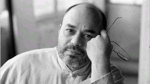

Showreel med Pascal Luneau. Venteliste
- Kategori:
- Kurs for viderekomne med åpning for andre
Kurs for viderekomne med åpning for andre
Åpent for profesjonelle skuespillere med en viss erfaring, men ikke fullt så strenge krav som våre helt røde kurs. Noen års erfaring etter ferdig utdanning er påkrevet. Se søknadsteksten for spesifikasjoner. - Dato:
- 30.01.2015 til 28.02.2015
- Start kl :
- 11:00
- Slutt kl :
- 16:00
- Pris:
- 2000,-
- Adresse:
- Norsk Skuespillersenter, Welhavensgate 1, Oslo
Pascal Luneau, som har virket som skuespillercoach i over 25 år, for filmer som Nikita og La Vie en Rose, er tilbake på Skuespillersenteret! Denne gangen med et konsept han kaller "Le clip".
{kind=link}
Hensikten er å gi skuespillerne mulighet til å spille inn en scene, spesialskrevet for dem, som de kan bruke i en showreel eller for å vise nye sider ved sitt arbeid.
Gjennom samtaler og øvelser blir deltakerne og Pascal kjent og finner ut av hva skuespillerne ønsker seg og hva slags tematikk Pascal ser for seg de ulike skuespillerne i. Deretter skriver Pascal scenene, og skuespillerne får tilsendt sine scener i løpet av 3-4 dager. Omtrent et par uker etter første møte er det en halv dag med prøver for hvert skuespillerpar (de er to i hver scene). Dette vil foregå på Skuespillersenteret.
Noen dager senere er det opptak av scenene på location. Det vil bli opp til hvert skuespillerpar å finne location for sin scene (i noen tilfeller vil det kanskje passe å filme på Skuepillersenteret). Pascal tar seg av etterarbeidet og sender den ferdige klippen etter ca. 2 uker.
Datoer:
Oppstartsmøte: 30. Jan
Prøver på Skuespillersenteret (halv dag pr par) : 12.-14. Feb
Filming på location: Avtales individuelt
Se eksempler med franske skuespillere her:
https://www.youtube.com/watch?v=IDF089Xal8g
Om Pascal-Emmanuel Luneau
Pascal-Emmanuel Luneau er en av fransk films store nestorer når det gjelder coaching av skuespillere. Han ble født i 1960, og har bakgrunn som skuespiller, manusforfatter, regissør og dramatiker for teateret, men han er altså først og fremst kjent for sitt arbeid som skuespillercoach for film. Han har jobbet på filmer som for eksempel Nikita, Farinelli, Århundrets barn (Les Enfants du Siècle), Solkongens Dans (Le Roi Danse) og La vie en rose (La Môme).
Studio Pygmalion
I 1988 etablerte Pascal-Emmanuel Luneau STUDIO PYGMALION, et verksted og laboratorium for skuespillere. Veldig snart sluttet både filmregissører, teaterinstruktører, samt manusforfattere og dramatikere seg til stedet. Juliette Binoche, Marion Cotillard, Antoine de Caunes, Michel Jonasz, Benoît Magimel, Anne Parillaud, Sagamore Stevenin, Boris Terral, Anna Mouglalis og Guillaume Canet har blant mange andre forberedt sine roller med Pascal. Han beskrives som en slags 'jordmor' for rollefigurene av skuespillerne som har jobbet med ham, og ordet 'magisk' går stadig igjen når folk skal beskrive hvordan han er å jobbe med og hvilke resultater han oppnår. Pascal-Emmanuel Luneau er spesielt kjent internasjonalt for å ha coachet Marion Cotillard til Oscar i sitt svært spesielle møte med Edith Piaf i filmen 'La Môme', hvor hun ikke bare spiller, men på gåtefullt vis inkarnerer Piaf.
Metode
Han støtter seg til en metode som han har utviklet i mer enn 20 år og som er i stadig utvikling. Denne metoden tar utgangspunkt i en kroppslig tilnærming hentet fra dans, fra musikk, samt faktiske erfaringer fra filminnspillinger og teaterprøver. Men han er også påpasselig med å med jevne mellomrom ”rense” denne metoden; å kvitte seg med utdaterte forestillinger om skuespill og foreldete praksiser. Pascal Luneaus fremgangsmåte kan også karakteriseres av at han benytter seg av teknikker som er nærmest meditative, der man kommer i kontakt med sin egen underbevissthet som et utgangspunkt for arbeidet. Han setter skuespilleren overfor det absolutt avgjørende for spillet - følelsene!
Han har en mild, men kompromissløs tilnærming til utfordringene som skuespilleren står overfor i forhold til seg selv og sitt arbeid - til balansen i forholdet mellom skuespillerens ønske om å spille, sine kunstneriske overbevisninger og sine reelle kunstneriske og tekniske ferdigheter.
Coaching
Fransk film er organisert noe annerledes enn i Norge, og coaching av skuespillere i forkant av filminnspilling er veldig vanlig. Bransjen har tatt konsekvensen av at mange filmregissører ikke har sin sterke side i skuespillerinstruksjon, og har delvis delegert bort denne jobben. Med coaching menes forarbeidet med skuespillerne; 'prøvetiden', som settes bort til en skuespillercoach. En coach jobber altså med skuespillerne i forkant, og er i tett dialog med regissøren og kommer med forslag til hvordan de forskjellige scenene kan løses.
Pris for medlemmmer av Norsk Skuespillerforbund: 1800,-